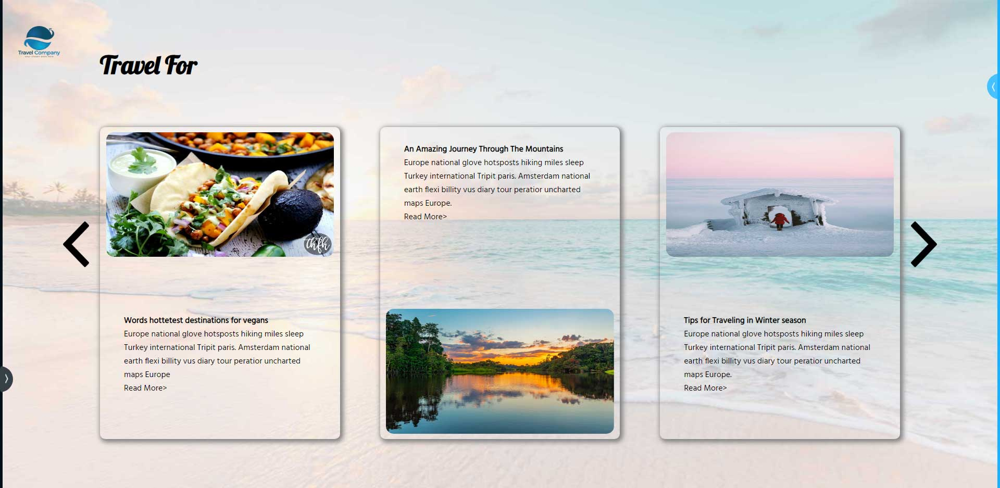

처음으로 창작한 개인페이지. 스크롤을 상하가 아닌 좌우로 하는 페이지를 만들어 보고자 이런 형태의 페이지를 만들게 되었습니다.
자바스크립트를 막 배우기 시작했을 때 제작한 페이지입니다. 처음에는 jQuery가 더 쉽게 느껴져서 jQuery로 스크립트를 짠 다음 나중에는 모두 native script로 다시 작성하였습니다.


처음에는 모든 사진을 불러온 뒤 한 장씩 보여주는 방식이었다면 마지막에 작성한 코드에서는 사진이 바뀔 때만 필요한 데이터를 불러오는 식으로 바꾸었고, 사이트 유지보수를 쉽게 만들기 위해 데이터 수정을 할 영역을 최소화하는 쪽으로 바꾸려는 노력을 했습니다.